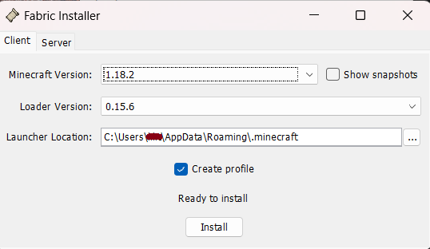

Instalacja
Pobierz paczkę modów: Mody
Wyszukaj na komputerze %appdata% i wejdź do folderu .minecraft
Sprawdź, czy znajduje się w nim folder mods
Jeśli nie, utwórz go
Wypakuj pobrane archiwum do folderu mods
W folderze mods znajdź plik fabric-installer-0.8.0.jar i uruchom go
Zmień wersje według poniższego screenshota i upewnij się, że lokalizacja instalacji kończy się na folderze .minecraft
Uruchom Minecrafta i zmień wersję na fabric-loader-1.16.5

Lista Modów
Biomy:
Better End — dodaje nowe bloki, biomy, przedmioty i moby do Endu
Better Nether — dodaje nowe biomy, struktury, rośliny i moby do Netheru
Oh The Biomes You'll Go [byg] — dodaje 80+ biomów z nowymi blokami
Struktury:
Castle Dungeons — Dodaje strukturę w postaci zamku
Inne:
RPG-HUD — m.in. pokazuje ilość użyć na narzędziach, stopień zużycia zbroi oraz paski życia innych mobów
Basic Nether Ores — dodaje podstawowe rudy do Netheru
Originy:
Daemonic — Dodaje originy
Dungeons —
Dungeons —
Dungeons —
Dungeons —
Dungeons —
Dungeons —
Dungeons —
Originy
- Human
- Feline
- Avian
- Phantom
- Merling
- Drowned
- Blazeborn
- Shulk
- Enderian
- Elytrian
- Arachnid
- Floran
- Inchling
- Piglin
- Slime
- Strider
- Evoker
- Wolf
- Witch
- Bee
- Guardian
- Snow Golem
- Fox
- Voidwalker
- Panda
- Dragonborn
- Cursed
- Weeping
- Phoenix
- Human
- Feline
- Avian
- Phantom
- Merling
- Drowned
- Blazeborn
- Shulk
- Enderian
- Elytrian
- Arachnid
- Floran
- Inchling
- Piglin
- Slime
- Strider
- Evoker
- Wolf
- Witch
- Bee
- Guardian
- Snow Golem
- Fox
- Voidwalker
- Panda
- Dragonborn
- Cursed
- Weeping
- Phoenix